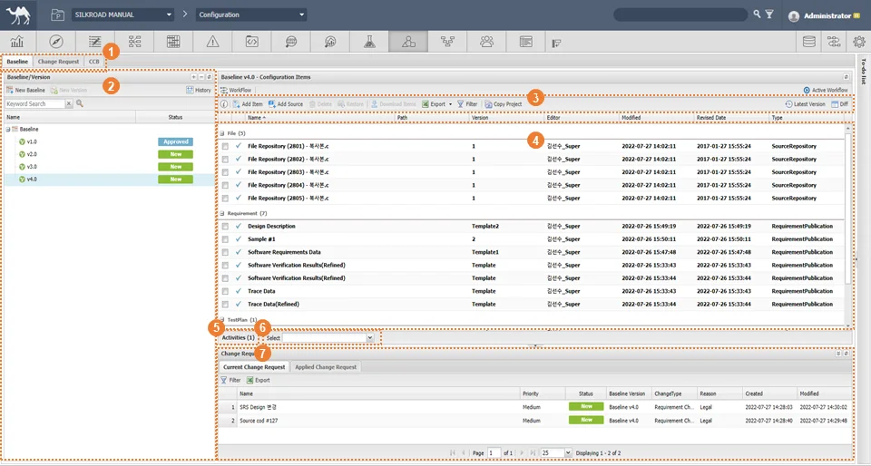
구분 | 명칭 | 설명 |
| 메뉴 탭 | Configuration Management 메뉴 탭 |
| Baseline/Versions | Baseline 및 Version 목록 |
| 메뉴 바 | Configuration Item 기능 버튼 영역 |
| Configuration Items 목록 | Baseline Version에서 설정한 Configuration Item 목록 |
| Activities | Baseline Version Item 추가, 삭제 이력 표시 |
| Select | 아이템 유형별 일괄 선택 |
| Change Request | Baseline Version과 관련된 Change Request 목록 - Current Change Request : Baseline Version에서 발행된 Change Request - Applied Change Request : Baseline Version에 적용된 Change Request |
Baseline을 생성하여 형상항목에 대한 통제, 변경상태 기록 및 관리 등의 업무를 수행할 수 있다.
① ‘Baseline’ 탭을 클릭한다.
② ‘New Baseline’ 버튼을 클릭한다. 또는 Baseline/Version 목록 빈 영역에서 우 클릭하여 ‘New Baseline’을 클릭한다.
③ ‘New Baseline’ 창이 생성된다.
④ Name, Priority, Content 정보를 입력한다.
⑤ ‘OK’ 버튼을 클릭하여 저장한다.

정보창의 필수 입력 필드(*)는 반드시 정보를 입력해야 하며 입력하지 않고 저장 시도 시 입력이 누락된 필드 안내 메시지가 생성된다. |
Baseline 정보창을 생성하여 정보를 수정할 수 있다.
① 대상‘Baseline’을 마우스 우 클릭하여 생성된 Context 메뉴에서 Detail Info를 클릭한다.
② Baseline 정보창이 생성된다.
③ Name, Priority, Content 정보를 수정한다.
④ ‘OK’ 버튼을 클릭하여 저장한다.

선택한 Baseline을 삭제한다. Baseline Context 메뉴와 정보창의 Delete 버튼으로 베이스라인을 삭제할 수 있다.
① 대상‘Baseline’을 마우스 우 클릭한다.
② 생성된 Context 메뉴에서 Delete를 클릭한다. 또는 베이스라인 정보창 하단의 Delete를 클릭한다.
③ Delete 알림 팝업이 생성된다.
④ ‘Yes’ 버튼을 클릭한다.

베이스라인 삭제는 베이스라인 버전이 존재하는 경우에는 삭제할 수 없고, 모든 버전 삭제 시 베이스라인 삭제가 가능하다. 삭제 기능은 관리자(administrator, Project Manager, 메뉴 권한 Admin) 권한을 가진 사용자만 실행이 가능하다. |
Version은 Baseline에서 변경사항이 발생한 Configuration Item들을 관리하는 라이브러리이다.
① ‘Baseline/Version’ 목록에서 New Version을 생성하고자 하는 Baseline을 클릭한다.
② ‘New Version’ 버튼을 클릭하거나, Baseline을 우 클릭하여 ‘New Version’ 버튼을 클릭한다.
③ ‘New Item’ 창이 생성된다.
④ Version, Priority, Content 정보를 입력한다.
⑤ ‘OK’ 버튼을 클릭하여 Version 생성을 완료한다.

New Version은 생성된 순서로 위에서 아래로 정렬된다(위치 변경 불가). 선택한 Baseline에 이미 생성된 Version이 있을 경우, New Version 생성 시 전 Version에 등록된 Configuration Item 을 가져오며, 각 아이템은 최신 버전으로 변경된다. |
Version 정보창을 생성하여 정보창 내용을 수정할 수 있다.
① 대상‘Version’을 마우스 우 클릭한다.
② 생성된 Context 메뉴에서 Detail Info를 클릭한다. 또는 우측 메뉴바에서 아이콘을 클릭한다.
③ Version 정보창이 생성된다.
④ Version, Priority, Content 정보를 수정한다.
⑤ ‘OK’ 버튼을 클릭하여 저장한다.

선택한 Baseline을 삭제한다. Version Context 메뉴와 정보창의 Delete 버튼으로 Version을 삭제할 수 있다.
① 대상‘Version’을 우 클릭한다.
② 생성된 Context 메뉴에서 Delete를 클릭한다. 또는 Version 정보창 좌측 하단의 Delete를 클릭한다.
③ Delete 알림 팝업이 생성된다.
④ ‘Yes’ 버튼을 클릭한다.
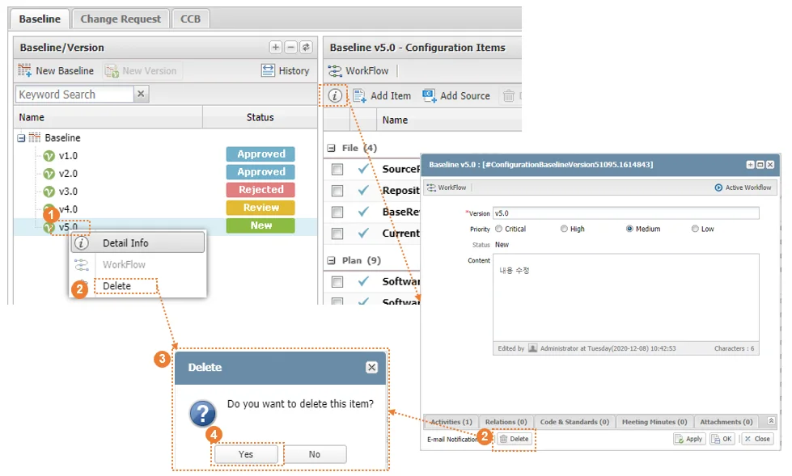
삭제 기능은 관리자(administrator, Project Manager, 메뉴 권한 Admin) 권한을 가진 사용자만 실행이 가능하다. |
선택한 Baseline의 각 Version에 등록된 Configuration Item의 정보를 Coverage 매트릭스로 제공한다. 화면에 표시된 정보를 기준으로 Coverage 매트릭스를 MS-Excel로 Export 할 수 있다.
① ‘History’ 버튼을 클릭한다.
② ‘History’ 창 우측 상단 콤보박스를 이용해 대상 Baseline을 클릭한다.
③ 하단 메뉴바에서 화면에 표시할 아이템의 개수 및 페이지를 변경한다.
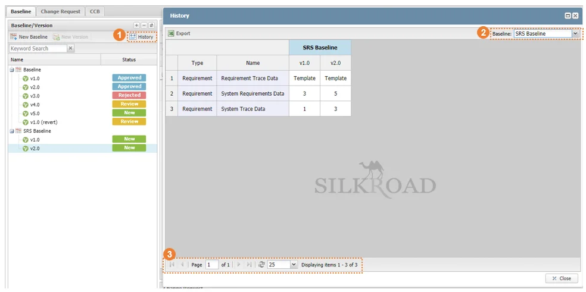 |
④ 좌측 상단 ‘Export’ 버튼을 클릭한다.
⑤ History Coverage.xlsx 파일이 사용자 로컬 PC로 다운로드 된다.
- 다운로드 위치는 인터넷 브라우저(Chrome) 설정에 따르며 일반적으로 ‘C:\Users\윈도우 계정\Downloads’ 이다.
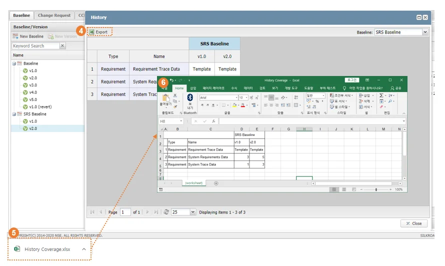 |
Baseline/Version의 Configuration Item은 SILKROAD에 등록된 요구사항 문서, 테스트 문서, 소스코드 리비전, 소스코드 파일을 대상으로 등록한다. Configuration Item으로 등록된 문서 및 소스 파일은 변경관리 절차가 적용되어 일반적인 내용 수정 및 추가가 제한되고 Change Request – Change Item의 Workflow Status에 따라 수정이 가능하다.
각 Version별 등록된 Configuration Item의 상태 표시는 네 가지로 구분된다. 상태 표시는 직전 Version의 Configuration Item의 상태를 기준으로 적용된다. 따라서 직전 Version의 Configuration Item의 상태를 변경하면 다음 Version의 Configuration Item의 상태 값도 변경된다.
상태 버튼 | 의미 |
| 이전 Version 대비 현재 Version에 새롭게 추가된 Configuration Item |
이전 Version 대비 현재 Version에 삭제된 Configuration Item | |
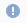 | 이전 Version 대비 변경사항(문서 버전 등)이 발생한 Configuration Item |
이전 Version 대비 변경사항(문서 버전 등)이 없는 Configuration Item |
|
① ‘Baseline/Version’에서 Version을 클릭한다.
② ‘메뉴바’의 ‘Add Item’ 버튼을 클릭한다.
|
③ ‘Resource Connector’ 창이 생성된다.
④ 추가 대상 아이템 위치(메뉴, Phase 또는 Folder)를 클릭한다.
- Plan/Requirement/TestCase/Configuration/Source Repository 아이템을 추가할 수 있다.
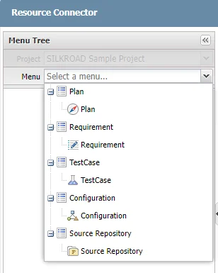 |
⑤ ‘Menu Items’에서 추가할 아이템 항목을 체크한다.
- 아이템 목록을 클릭하면 우측 Data View에 해당 아이템의 내용이 표시된다.
- Detail View는 확장 버튼으로 영역을 확장/축소 할 수 있다.
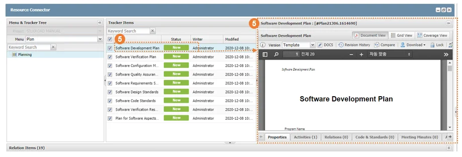 |
⑥ ‘Relation Items’에서 선택된 아이템 목록과 개수를 확인한다.
⑦ ‘OK’ 버튼을 클릭하여 저장한다.
⑧ Configuration Item 목록에 선택한 아이템이 추가된 것을 확인한다.
|
|
Resource Connector 창에서 대상 아이템이 Lock, Check-Out, Workflow 진행 상태인 경우 체크박스가 비활성화 되어 선택할 수 없다. 해당 아이템은 Unlock, Check-In, Workflow 초기화(Reset) 또는 완료 후 등록한다. Add Item 기능은 Baseline Version의 Workflow가 실행(Active Workflow) 전 Status ‘New’ 상태일 때만 가능하다. Workflow진행 후에는 Add Item이 비활성화 된다. Configuration Item으로 등록된 문서 및 소스 파일은 변경관리 절차가 적용되어 Change Request – Change Item의 Workflow Status에 따라 수정이 제한된다. |
|
SILKROAD 소스관리시스템과 소스코드형상관리 도구(SVN, GIT, Perforce)의 연동을 통해 SILKROAD에 등록한 소스코드 리비전을 Configuration Item으로 등록한다. Add Source 기능은 Baseline Version의 Workflow가 실행(Active Workflow) 전 Status ‘New’ 상태일 때만 가능하다.
① ‘Baseline/Version’에서 Version을 클릭한다.
② 메뉴바의 ‘Add Source’ 버튼을 클릭한다.
③ Select Repository Menu 창이 생성된다.
④ 대상 메뉴를 선택 한 후 OK 버튼을 클릭한다.
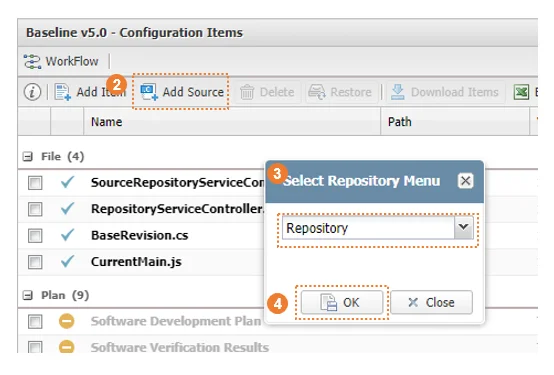 |
⑤ ‘Add Source’ 창이 생성된다.
⑥ ‘Revisions’ 영역에서 소스코드 리비전을 클릭한다. 또는, Add Source 창 중앙의 그리드뷰에서 소스코드 리비전을 클릭한다.
⑦ ‘OK’ 버튼을 클릭한다.
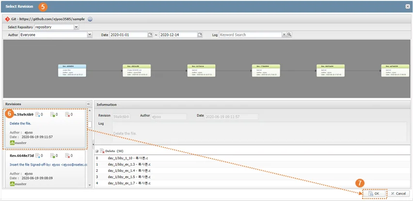 |
⑧ Configuration Item 목록에 Source 항목이 추가된 것을 확인한다.
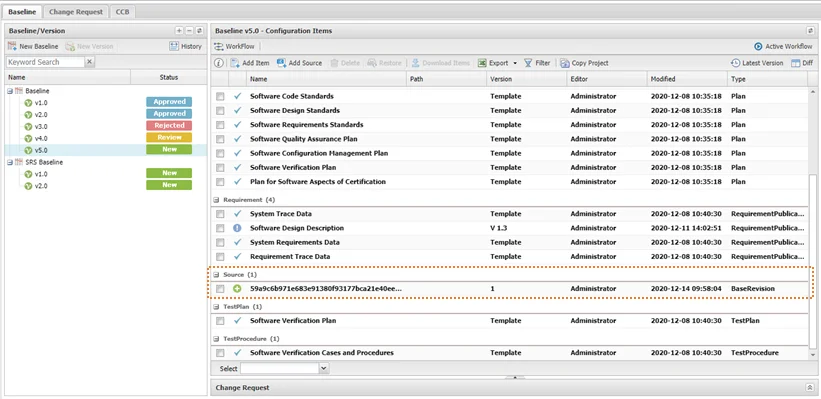 |
Configuration Item은 등록 시 최신 버전으로 등록되며, 사용자가 등록된 아이템의 버전을 변경할 수 있다.
① Configuration Item을 클릭 후 우 클릭하여 ‘Revision History’를 클릭한다.
② Revision History 창이 생성된다.
③ 변경할 버전 체크박스를 클릭하고 ‘OK’버튼을 클릭한다.
|
Configuration Item 버전 변경은 Baseline Version의 Workflow가 실행(Active Workflow) 전 Status ‘New’ 상태일 때만 가능하다. ‘Active Workflow’ 이후 Configuration Item 우 클릭 기능은 제공되지 않는다. |
Configuration Item의 삭제는 Baseline Version의 Workflow가 실행(Active Workflow) 전 Status ‘New’ 상태일 때만 가능하다. Workflow 진행 후에는 Delete가 Hide 된다.
① 삭제하고자 하는 Configuration Item을 체크한다.
② 메뉴바의 ‘Delete’ 버튼을 클릭한다.
③ 클릭한 문서가 Configuration Item 목록에서 삭제된다.
|
Configuration Item이 Add 상태인 경우 Delete 수행 시 Configuration Item이 목록에서 삭제된다. |
① 삭제하고자 하는 Configuration Item을 체크한다.
② 메뉴바의 ‘Delete’ 버튼을 클릭한다.
③ 클릭한 문서의 상태가 ‘Delete’로 변경된다.
|
Configuration Item이 Modify/Not Modify 상태인 경우 Delete 된 Configuration Item은 Delete( |
① 삭제 상태‘ ’ 로 표시된 Configuration Item 중 복구 대상 항목을 체크한다.
’ 로 표시된 Configuration Item 중 복구 대상 항목을 체크한다.
② ‘Restore’ 버튼을 클릭한다.
③ Configuration Item의 상태 버튼이 ‘ ’에서 ‘
’에서 ‘ ’로 변경된다.
’로 변경된다.
|
Configuration Item이 Delete( |
Baseline 메뉴바 영역으로 Configuration Item을 다운로드/조회 등을 확인하는 기능이다.
등록한 Configuration Item을 사용자 PC에 저장하는 기능이다. 하나의 아이템 선택 시 해당 파일 형식으로, 하나 이상 선택해 다운로드 시 압축파일(.zip) 형태로 다운로드 한다.
① ‘Baseline/Versions’의 Version을 클릭한다.
② Download하고자 하는 Configuration Item 체크박스를 체크하거나 하단 Select 영역에서 일괄 선택할 Tracker를 클릭한다. 선택한 Tracker를 다시 클릭 하면 선택이 해제된다.
③ 메뉴바에서 ‘Download Items’ 버튼을 클릭한다.
④ 선택 아이템 파일이 사용자 로컬 PC로 다운로드 된다.
⑤ 다운로드 위치는 인터넷 브라우저(Chrome) 설정에 따르며 일반적으로 ‘C:\Users\윈도우 계정\Downloads’ 이다.
|
Delete 상태의 Configuration Item은 다운로드 되지 않는다. |
Baseline/Version의 Configuration Item 목록을 MS-Excel로 내보내는 기능이다.
① ‘Baseline/Versions’의 Version을 클릭한다.
② 메뉴바에서 ‘Export’ 버튼을 클릭한다.
③ ‘Baseline Version 명_Configuration Items.xlsx’ 파일이 사용자 로컬 PC로 다운로드 된다.
- 다운로드 위치는 인터넷 브라우저(Chrome) 설정에 따르며 일반적으로 ‘C:\Users\윈도우 계정\Downloads’ 이다.
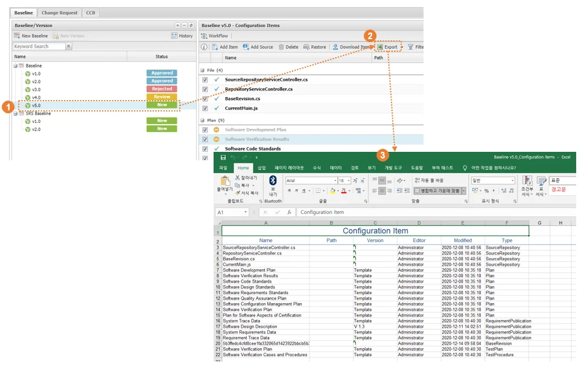 |
Baseline/Version의 Configuration Item 목록에서 Source Repository에 등록된 소스 파일의 CheckSum 데이터(Crc32)를 추가하여 MS-Excel로 내보내는 기능이다.
① ‘Baseline/Versions’의 Version을 클릭한다.
② 메뉴바에서 ‘Export’ 버튼을 클릭한다.
③ ’Baseline Version 명_Configuration Items.xlsx’ 파일이 사용자 로컬 PC로 다운로드 된다.
- 다운로드 위치는 인터넷 브라우저(Chrome) 설정에 따르며 일반적으로 ‘C:\Users\윈도우 계정\Downloads’ 이다.
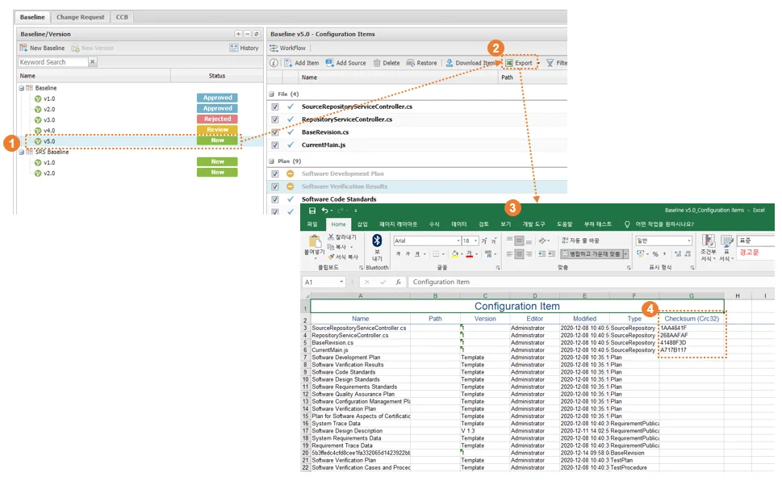 |
Configuration Item의 Name(아이템 명), Compare(상태), Path(경로), Editor(수정자), Modified(수정 날짜) 등의 정보를 통해 검색할 수 있는 기능이다.
① ‘Baseline/Versions’의 Version을 클릭한다.
② 메뉴바에서 ‘Filter’ 버튼을 클릭한다.
③ 하단 Filter 영역에서 검색 정보를 선택, 입력한다.
④ ‘Search’ 버튼을 클릭하여 검색한다.
⑤ 필터 초기화는 Reset Filter 버튼 클릭 후 ‘Search’ 버튼을 클릭하거나, Reset Filter 확장 버튼을 클릭하여 Reset Filter & Search를 클릭한다.
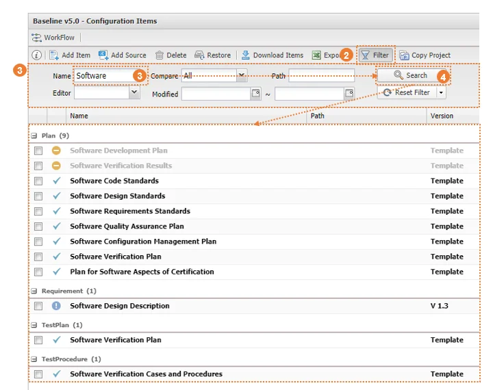 |
Baseline Version에 등록된 각 메뉴별 Configuration Item을 복사하여 새 프로젝트를 생성하는 기능이다. Configuration Item에 포함된 문서는 등록된 요구사항, 추적성 정보도 복사된다.
① ‘Baseline/Versions’의 Version을 클릭한다.
② 메뉴바에서 ‘Copy Project’ 버튼을 클릭한다.
③ Copy Project 팝업창에서 Name, Start Date, End Date, Status, Description을 입력한다.
④ Copy Project 팝업창 우측 하단의 OK 버튼을 클릭한다.
⑤ 프로젝트 생성 완료 및 이동 안내 팝업에서 OK를 클릭한다.
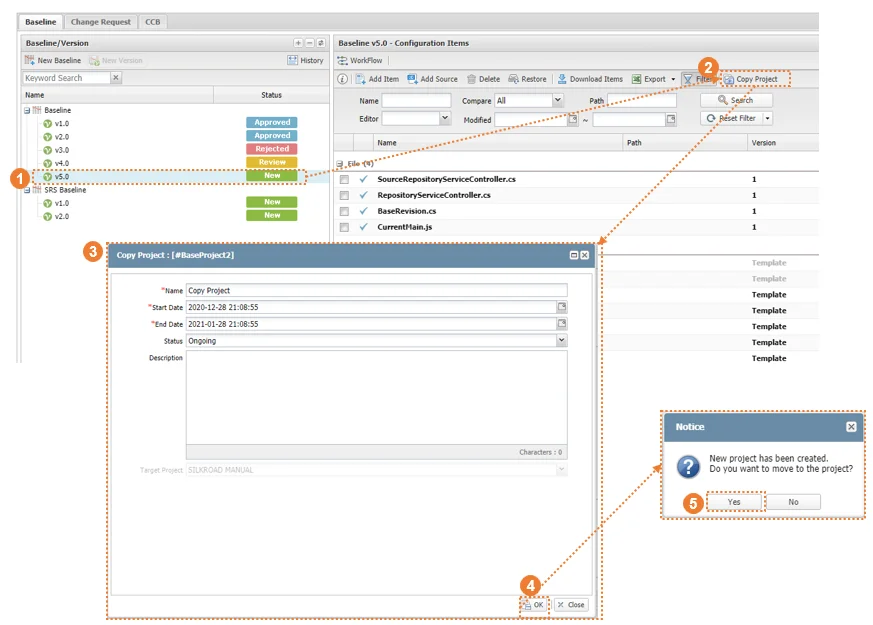 |
⑥ 생성된 프로젝트로 이동한다.
|
프로젝트 복사 대상은 Configuration Item이다. 요구사항 문서의 경우 요구사항 내용과 추적성 정보가 복사된다.(Configuration Item에 등록한 요구사항 문서의 추적성 정보만 복사됨) Relation 정보/Baseline 정보는 복사되지 않는다. |
Baseline Version의 Workflow가 실행(Active Workflow) 전 Status ‘New’ 상태일 때 사용 가능한 기능이다. Baseline Version에 등록된 Configuration Item의 버전을 조회하고 현재 등록된 버전보다 최신버전이 있는 Item을 목록에 표시한다. 원하는 문서를 선택해 최신 버전으로 변경할 수 있다.
① ‘Baseline/Versions’의 Version을 클릭한다.
② 메뉴바에서 ‘latest Version’ 버튼을 클릭한다.
③ ‘Latest Diff View’ 창이 생성된다.
④ 최신 버전으로 변경할 Item 체크박스를 체크한다.
⑤ ‘Save’ 버튼을 클릭한다.
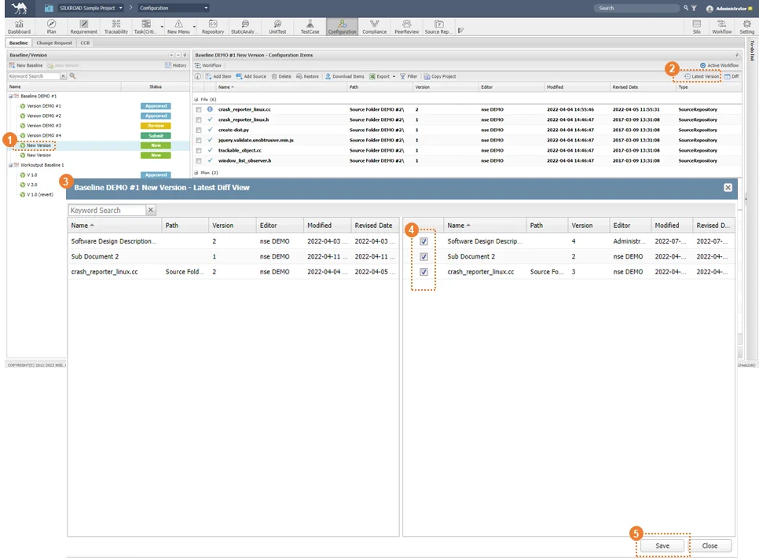 |
Baseline Version별 등록된 Configuration Item을 비교하고 추가, 삭제, 수정 상태를 아이콘으로 표시한다. 특정 Baseline Version에 등록된 Configuration Item을 기준으로 RollBack 하여 Baseline Version을 생성할 수 있다.
① ‘Baseline/Versions’을 클릭한다.
② 메뉴바에서 ‘Diff’ 버튼을 클릭한다.
③ ‘Baseline Version Diff’ 창이 생성된다.
|
④ ‘Target/Source Baseline Version’의 펼침단추를 클릭하여 비교 대상 Version을 클릭한다.
- Target Baseline Version : 비교 기준 Baseline Version
- Source Baseline Version : 비교 대상 Baseline Version
⑤ ‘Target Baseline Version’ 대비 ’Source Baseline Version’ Configuration Item의 상태가 Configuration Item 종류별로 표시된다.
|
⑥ Source Baseline Version 우측 Filter by에서는 Configuration Item의 상태(Added, Modified, Not Modified, Deleted)를 기준으로 필터 할 수 있다.
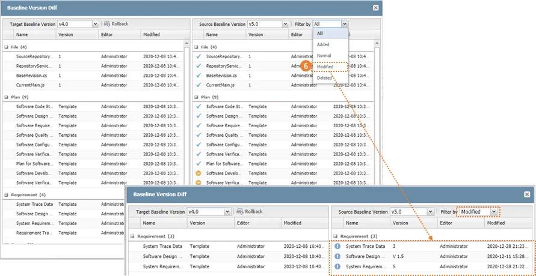 |
Target Baseline Version에 등록된 Configuration Item 버전, 상태로 Rollback해 새로운 베이스라인을 생성하는 기능이다.
① Rollback 대상‘Target Baseline Version’을 선택한다.
② ‘Rollback’을 클릭한다.
③ Rollback Baseline Version 창에서 ‘Yes’ 버튼을 클릭한다.
④ Baseline Version Name을 입력하고 ‘OK’를 클릭한다.
- Baseline Version Name은 기본적으로 ‘Target Baseline Version Name (revert)’ 로 표시된다.
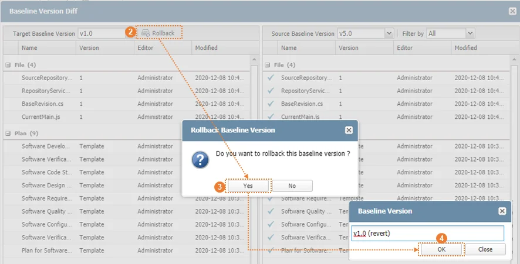 |
⑤ 생성된 Baseline Version은 ‘Target Baseline Version’의 Configuration Item(버전 정보 포함) 목록과 동일하게 생성된다. Configuration Item의 상태 표시는 이전 베이스라인의 형상항목의 상태와 비교하여 표시된다.
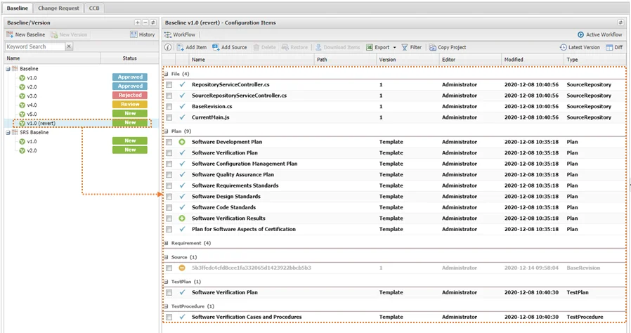 |
Baseline/Version의 검토/승인을 위하여 프로세스를 활성화하고 업무를 할당하는 기능이다.
① 메뉴바 상단의 Baseline/Version의 ‘Workflow’ 버튼을 클릭한다.
- 최초 Baseline/Version Wokflow 실행 시에는 메뉴바 우측 상단의 Active Workflow 버튼을 클릭한다.
② ‘Workflow’ 창이 생성된다.
③ Next : 다음 Activity, Assignee : 업무 담당자, Comment : Workflow에 대한 내용을 입력한다.
④ ‘Assignment’ 버튼을 클릭하여 Workflow의 다음 단계로 진행한다.
|
⑤ Baseline/Version의 Status 및 담당자(Process Assignee)가 변경된다.
⑥ Baseline/Version 검토/승인 업무가 업무 담당자(Process Assignee)의 To-do List에 추가된다.
|
베이스라인 승인 프로세스가 시작(Active Workflow 클릭)되면 Configuration Item의 추가, 변경, 삭제 등 편집이 불가하다. |
Baseline Version 화면 하단의 Change Request 영역은 Baseline Version과 관련된 2가지 유형의 Change Request 목록을 표시한다. 각 목록은 MS-Excel 로 출력할 수 있다.
- Current Change Request : 해당 Baseline Version에 대해 발행한 Change Request 목록(시스템 자동 입력)
- Applied Change Request : Baseline Version을 생성하기 위하여 적용된 Change Request 목록(사용자 수동 추가/삭제 가능)
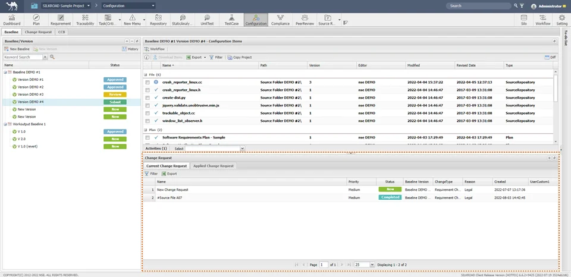 |
Baseline Version의 Configuration Item에 대해 생성된 Change Request 목록을 표시한다. 필터를 이용해 목록의 Change Request를 필터링 할 수 있다.
① Baseline 탭에서‘Baseline/Versions’의 Version을 클릭한다.
② 하단 Change Request 영역에서 Current Change Request 탭을 클릭한다.
③ 좌측 상단 ‘Export’를 클릭한다.
④ ‘Baseline Version 명_Current Change Request.xlsx’ 파일이 사용자 로컬 PC로 다운로드 된다.
- 다운로드 위치는 인터넷 브라우저(Chrome) 설정에 따르며 일반적으로 ‘C:\Users\윈도우 계정\Downloads’ 이다.
|
Baseline Version을 생성하기 위하여 적용된 Change Request 목록을 표시한다. Change Request 목록은 사용자가 추가/삭제할 수 있다.
① ‘Baseline/Versions’의 Version을 클릭한다.
② 하단 Change Request 영역에서 Applied Change Request 탭을 클릭한다.
③ ‘Add’ 버튼을 클릭한다.
④ ‘Change Request’ 창이 생성된다.
⑤ 목록에서 등록하고자 하는 CR을 체크한다.
- 목록의 Change Request를 더블클릭하여 내용을 확인할 수 있다.
⑥ ‘OK’ 버튼을 클릭한다.
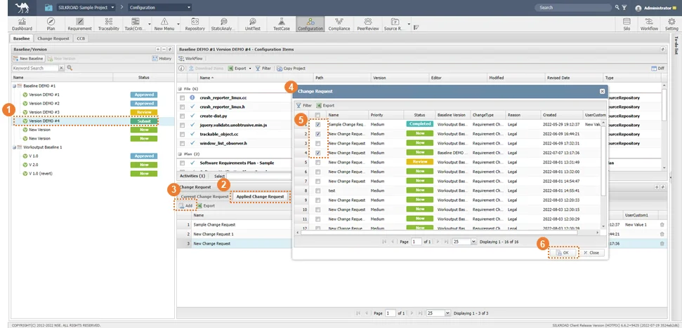 |
⑦ Change Request 삭제는 목록 우측의 삭제 아이콘을 클릭하거나 Change Request 창에서 체크를 해제한 뒤 저장한다.
⑧ ‘Export’를 클릭한다.
⑨ ‘Baseline Version 명_Applied Change Request.xlsx’ 파일이 사용자 로컬 PC로 다운로드 된다.
- 다운로드 위치는 인터넷 브라우저(Chrome) 설정에 따르며 일반적으로 ‘C:\Users\윈도우 계정\Downloads’ 이다.
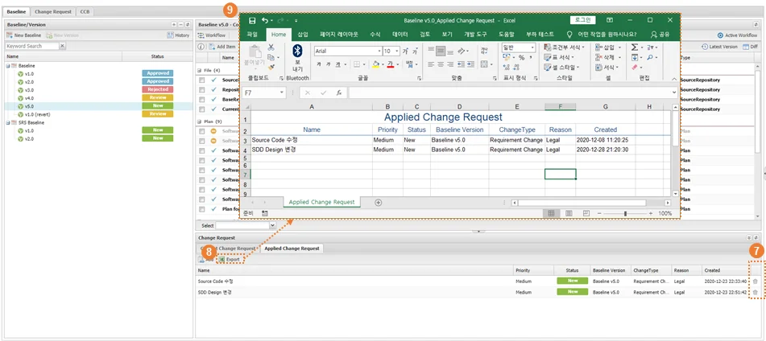 |
Change Request 목록은 폴더를 포함한 트리 구조로 정보를 파악하기 쉬운 화면 구성을 제공한다.
|
구분 | 명칭 | 설명 |
| 메뉴바 | Change Request 도구 모음 |
| Change Request 목록 | Folder 및 Change Request 목록 표시 |
| Change Request 뷰 | Change Request의 상세 정보 표시 |
Change Request 목록은 Change Request와 폴더로 구성된다. Change Request는 Root 위치와 폴더 위치에 생성할 수 있고 위치 이동이 가능하다.
① Change Request 목록이 클릭되지 않은 상태에서 메뉴바의 New Change Request를 클릭하거나, Change Request 목록 빈 영역에서 우 클릭하여 생성되는 Context 메뉴 중에서 ‘New Change Request’ 버튼을 클릭한다.
② New Change Request 창에서 데이터 입력 후 OK 버튼을 클릭한다.
③ Change Request 목록 하단에 ‘New Change Request’가 생성된다.
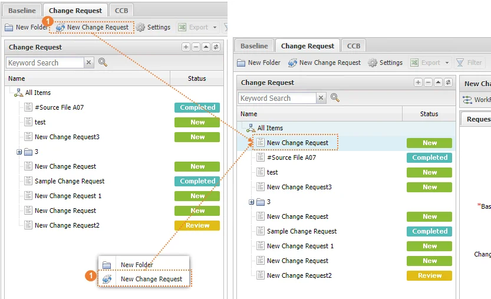 |
④ ‘All Item’ 클릭 시 Change Request 목록에 생성된 모든 Change Request가 Grid로 표시된다.
새로 생성한 Change Request는 목록 최상단에 위치한다. 생성된 Change Request 위치는 Drag & Drop으로 변경할 수 있다. |
① Change Request를 생성할 폴더 클릭 후 메뉴바의 New Change Request를 클릭하거나, 폴더를 우 클릭하여 생성되는 Context 메뉴 중에서 ‘New Change Request’ 버튼을 클릭한다.
② New Change Request 창에서 데이터 입력 후 OK 버튼을 클릭한다.
③ 클릭한 폴더 하위에 ‘New Change Request’가 생성된다.
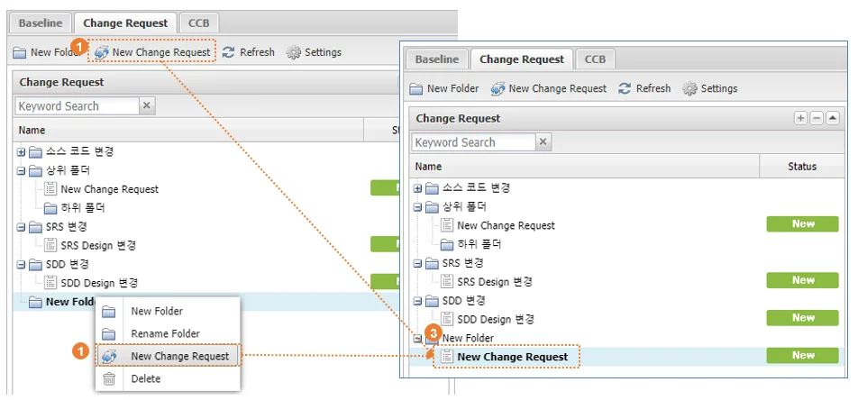 |
① 폴더 클릭 시 폴더 내에 생성된 모든 Change Request가 Grid로 표시된다.
Change Request는 삭제 권한을 가진 사용자에 의해 삭제될 수 있다. 삭제된 Change Request에 포함된 Change Item은 Workflow 진행 상태가 Reset되어 다시 새로운 Change Request에 추가 할 수 있게 된다.
① Change Request 목록에서 삭제 대상 Change Request를 우 클릭하여 생성된 Context 메뉴에서 Delete를 클릭한다.
② Change Request 목록에서 삭제 대상 Change Request를 클릭하고 해당 Change Request 정보가 표시되는 뷰 하단에 위치한 Delete 버튼을 클릭한다.
③ Change Request를 우 클릭하여 생성된 Context 메뉴에서 Detail Info를 클릭한 뒤 정보창 하단의 Delete 버튼을 클릭한다.
④ Delete 팝업에서 OK 버튼을 클릭한다.
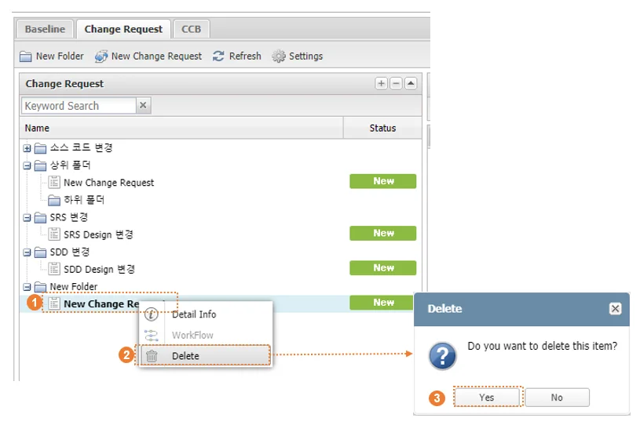 |
⑤ ‘All Item’, 폴더를 클릭해 Change Request Grid를 생성하고 대상을 우 클릭하여 Delete 하거나 Detail Info를 실행 해 Delete를 실행한다.
삭제 기능은 관리자(administrator, Project Manager, 메뉴 권한 Admin) 권한을 가진 사용자만 가능하다. |
① 메뉴바 ‘New Folder’ 버튼을 클릭한다.
② Change Request 목록 영역에 새로운 폴더가 생성되며, 폴더 이름영역이 활성화 된다.
|
③ 폴더 이름을 수정하고 엔터키를 입력한다.
- New Folder 생성 시 폴더 이름은 ‘New Folder’가 기본 제공되며 사용자가 변경할 수 있다.
- 폴더 이름은 중복 저장이 가능하다.
① Change Request 목록에서 대상 폴더를 더블클릭하거나 우 클릭 시 생성되는 Context 메뉴에서 Rename Folder를 클릭한다.
② 폴더 이름 영역이 활성화 된다.
③ 폴더 명을 수정하고 엔터를 입력한다.
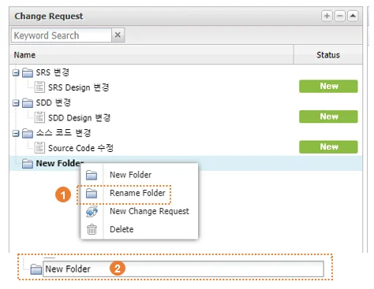 |
① Change Request 목록에서 폴더를 클릭하고 우 클릭 시 생성되는 Context 메뉴에서 Delete를 클릭한다.
② 삭제 팝업에서 OK 버튼을 클릭한다.
③ 폴더가 삭제된다.
|
① 폴더 내 Change Request 또는 하위폴더가 존재하는 경우 대상 폴더를 삭제할 수 없다. 폴더 내에 위치한 Change Request, 폴더를 다른 폴더 또는 Root로 이동하거나 삭제한 뒤 대상 폴더 삭제가 가능하다.
|
삭제 기능은 관리자(administrator, Project Manager, 메뉴 권한 Admin) 권한을 가진 사용자만 가능하다. |
① 상위 폴더를 클릭한다.
② 메뉴바에서 ‘New Folder’를 클릭하거나 상위 폴더 우 클릭 시 생성되는 Context 메뉴에서 New Folder를 클릭한다.
③ 하위 Folder가 생성된다.
|
① Change Request 목록 우측 상단에 위치한 ‘Expand All’ 버튼을 클릭 시 접혀 있는 폴더가 1레벨 씩 확장 된다.
② Change Request 목록 우측 상단에 위치한 ‘Collapse All’ 버튼을 클릭 시 펼쳐져 있는 폴더가 모두 접힌 상태가 된다.
Change Request 및 폴더의 위치를 이동하는 방법은 Drag & Drop 과 Order Setting 두 가지가 있다.
Change Request와 폴더 모두 드래그 앤 드롭으로 가능하다. 폴더는 위치 이동 시 폴더에 포함된 Change Request도 모두 함께 이동된다.
① 이동 대상 Change Request 또는 폴더를 선택한다.
② 원하는 위치에 드래그 앤 드롭하여 위치를 이동한다.
- Drag and drop 아이콘이  : 해당 위치로 이동
: 해당 위치로 이동
- Drag and drop 아이콘이  : 해당 폴더 하위로 이동
: 해당 폴더 하위로 이동
|
Change Request 또는 폴더 위치를 보다 수월히 이동시키기 위한 방법이다.
①  Change Request 목록 우측 상단의 ‘ ’버튼을 클릭한다.
Change Request 목록 우측 상단의 ‘ ’버튼을 클릭한다.
② 위치를 이동할 대상 Change Request, 폴더를 선택하고 하단에 위치한 ‘Up, Down’ 버튼을 클릭해 위치를 이동한다.
③ 원하는 위치에 이동 완료 후 ‘Apply Index’버튼을 클릭해 저장한다.
|
Change Request 목록을 새로고침 한다.
Baseline Version에 등록된 Configuration Item은 수정 및 개정이 제한된다. 이 때 Change Request를 발행해 대상 Configuration Item을 Change Item으로 등록함으로써 Workflow 상태(Status) 에 따라 수정 가능하도록 설정할 수 있다. Setting은 대상 메뉴에 대해 수정 및 개정 제한이 해제되는 상태(Status)를 설정한다.
① Settings를 클릭한다.
② Configuration Status Setting 팝업창이 생성된다.
③ Menu Type(Plan, Requirement, TestCase, Source Repository)을 클릭한다.
④ Menu Name을 클릭한다.
- Menu Name은 Menu Type에서 선택한 메뉴 Name이 표시된다.
- Test Case의 경우, Menu Name 선택 시 Test Plan/Procedure/Report를 추가로 선택한다.
⑤ Status 목록에서 설정 대상 Status에 체크한다.
- Status는 복수 선택이 가능하다.
⑥ Save 버튼을 클릭한다.
|
Change Request 목록을 MS-Excel로 내보내는 기능이다. Change Request 목록에서 All Item 또는 폴더를 선택 시 Export 버튼이 활성화 되고 포함된 Change Request 목록을 다운로드 한다.
① Change Request 목록에서 All Item 또는 폴더를 클릭한다.
② 메뉴바에서 ‘Export – Export to Excel’ 버튼을 클릭한다.
③ ‘ChangeRequest.xlsx’ 파일이 사용자 로컬 PC로 다운로드 된다.
- 다운로드 위치는 인터넷 브라우저(Chrome) 설정에 따르며 일반적으로 ‘C:\Users\윈도우 계정\Downloads’ 이다.
Change Request의 Name, Priority, Status, Change Type, Reason, Created 및 사용자 설정 필드 등의 정보를 통해 검색할 수 있는 기능이다. 설정된 필터 조건은 저장 후 필요 시 로드해 사용할 수 있다.
① 메뉴바에서 ‘Filter’ 버튼을 클릭한다.
② 하단 Filter 영역에서 검색 대상 Filer 값을 클릭/입력한다.
- Save 클릭 시 필터 이름을 입력하고 저장 해 필터 조건 파일을 생성한다.
- Load 클릭 시 저장된 필터 조건 파일과 가장 최근 조회한 필터 조건(Recent Filter) 목록을 제공한다. 원하는 필터 조건을 선택하고 OK 클릭 시 필터의 필드에 저장된 필터 조건이 입력된다.
③ ‘Search’ 버튼을 클릭하여 검색한다.
④ 필터 초기화는 Reset Filter 버튼 클릭 후 ‘Search’ 버튼을 클릭하거나, Reset Filter 확장 버튼을 클릭하여 Reset Filter & Search를 클릭한다.
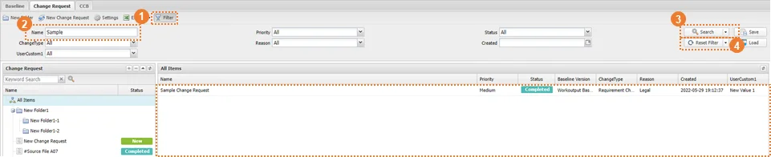 |
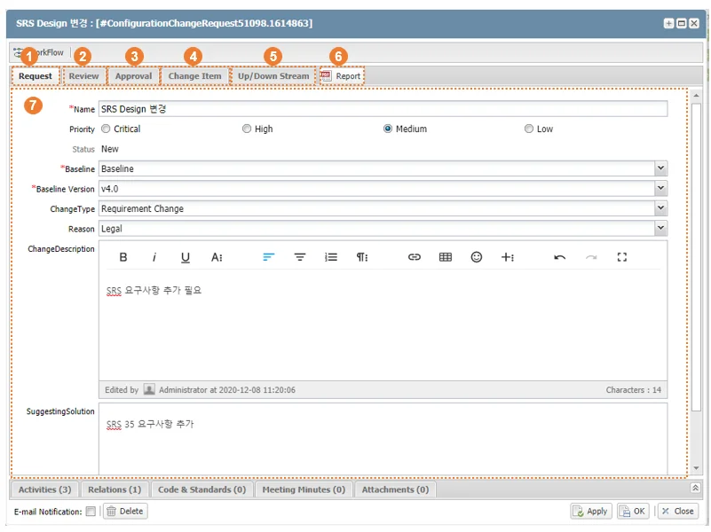 |
구분 | 명칭 | 설명 |
| Request 탭 | Change Request 내용 입력 |
| Review 탭 | Change Request Review 입력 |
| Approval 탭 | change Request 승인 내용 입력 |
| Change Item 탭 | change Item 목록 관리 |
| Up/Down Stream 탭 | 상/하위 Change Request 목록 관리 |
Report 버튼 | Change Request Report 표시 및 출력 | |
| 내용 | 탭 내용 표시 |
Change Request Name, 생성 대상 Baseline Version 등 생성 정보를 표시하고, 관련 정보 필드에 데이터를 입력한다.
① 메뉴바에서 New Change Request를 클릭하거나, 생성된 Change Request를 더블클릭한다.
② Change Request 창이 생성된다.
③ Change Request 데이터를 입력한다.
- Name : Change Request 제목을 입력한다. 기본 값은 New Change Request 이며, 중복 저장이 허용 된다.
- Priority : 중요도를 클릭한다.
- Status : Workflow Status를 표시한다(사용자 입력/수정 불가)
- Baseline : Change Item이 포함된 베이스라인을 클릭한다(필수 입력).
- Baseline Version : Change Item이 포함된 베이스라인 버전을 클릭한다(필수 입력). 클릭한 Baseline Version의 Current Change Request 목록에 현재 Change Request 정보가 표시된다.
- Reason : Change Request 발행 사유를 클릭한다.
- Change Description : 변경 내역을 기술한다.
- Suggesting Solution : 해결 방안을 기술한다.
④ Apply 버튼을 클릭해 임시 저장 또는 OK 버튼을 클릭하여 저장한다.
⑤ Request 탭에서 입력된 Change Request 관련 정보는 ‘Report - Save’ 버튼을 클릭해 다운로드 한다.
⑥ ‘Report – Print’버튼 클릭 시 Change Request 정보를 연결된 Print를 통해 출력 한다.
⑦ ‘#ConfigurationChangeRequest ’ 파일이 사용자 로컬 PC로 다운로드 된다.
- 다운로드 위치는 인터넷 브라우저(Chrome) 설정에 따르며 일반적으로 ‘C:\Users\윈도우 계정\Downloads’ 이다.
Change Request 수정은 생성자/관리자/Workflow Assignee가 가능하다. |
|
Change Request의 Review 내용을 관리한다.
① Change Request를 클릭하거나, 우 클릭해 Context 메뉴에서 Detail Info를 실행한다.
② Change Request 창이 생성된다.
③ Review 탭을 클릭한다.
④ 상단 Add 버튼을 클릭한다.
⑤ New Review 창이 생성된다.
⑥ Review 내용을 입력한다.
- Name : 리뷰 제목을 입력한다.
- Comment : 리뷰 내용을 입력한다.
- Review Result : 리뷰 결과를 클릭한다.
- Review Result Feedback : 리뷰 결과에 대한 피드백을 입력한다.
- Reviewer Confirmation : 리뷰 검토 결과를 클릭한다.
- Reviewer Confirmation Comment : 리뷰 검토 의견을 입력한다.
⑦ Apply로 임시 저장 또는 OK 버튼을 클릭하여 저장한다.
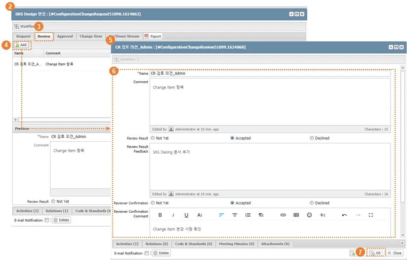 |
① Change Request를 클릭하거나, 우 클릭해 Context 메뉴에서 Detail Info를 실행한다.
② Change Request 창이 생성된다.
③ Review 탭을 클릭한다.
④ Review 목록에서 대상을 클릭한다.
⑤ 하단 Preview에서 Review 내용을 확인한다.
⑥ Review 목록에서 대상을 더블클릭하거나 우 클릭해 ‘Detail Info’를 실행해 Review 창을 열어 정보를 확인한다.
|
① Change Request를 클릭하거나, 우 클릭해 Context 메뉴에서 Detail Info를 실행한다.
② Change Request 창이 생성된다.
③ Review 탭을 클릭한다.
④ Review 목록에서 대상을 더블클릭하거나 우 클릭해 ‘Detail Info’를 실행한다.
⑤ Review 창 하단 Delete 버튼을 클릭한다. 또는 Review 목록을 우 클릭하여 생성되는 Context 메뉴에서 Delete를 클릭한다.
⑥ Delete 팝업에서 Yes 버튼을 클릭한다.
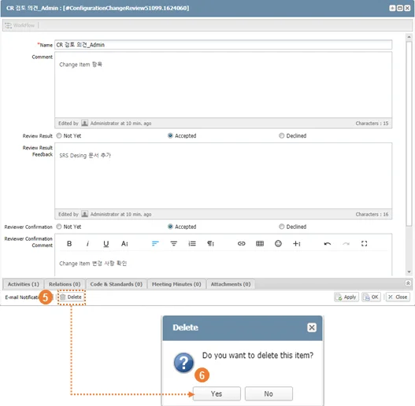 |
삭제 기능은 관리자(administrator, Project Manager, 메뉴 권한 Admin) 권한을 가진 사용자만 가능하다. |
Change Request의 승인 관련 내용인 CCB 데이터와 Change Order 데이터를 관리한다.
① Change Request를 클릭하거나, 우 클릭해 Context 메뉴에서 Detail Info를 실행한다.
② Change Request 창이 생성된다.
③ Approval 탭을 클릭한다.
④ Approval 내용을 입력한다.
- CCB : 관련 CCB를 입력한다. 생성된 CCB에서 Reviewed Change Request 데이터로 선택된 Change Request인 경우 CCB가 자동 입력된다.
- Approval Date : 승인 일자를 입력한다.
- Approval Priority : 승인 중요도를 입력한다.
- Approval Change Type : 승인 종류를 클릭한다.
- Comment : 승인 내용을 입력한다.
⑤ Apply 버튼을 클릭해 임시 저장 또는 OK 버튼을 클릭하여 저장한다.
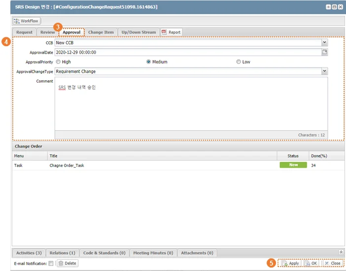 |
Change Request와 추적성을 갖는 Change Order(Task)를 생성하여 Change Request로 인한 Configuration Item의 변경 업무 할당 및 업무 진행률을 관리할 수 있다. Change Order는 Change Request의 Workflow Activity를 통해 직접 생성하거나, 기존 생성된 Task와 Relation 설정하는 두 가지 방법으로 연결한다.
① 첫 번째, Workflow Activity를 통한 생성;
② Change Request Change Request를 클릭하거나, 우 클릭해 Context 메뉴에서 Detail Info를 실행한다.
③ ‘Workflow’ 버튼을 클릭한다.
④ Workflow Activity를 Create CO 단계까지 진행하고 해당 Change Order를 생성할 Process Menu를 선택하고 Workflow를 진행한다.
⑤ New Task 창이 생성된다.
⑥ 관련 정보를 입력하고 ‘OK’ 버튼을 클릭한다.
⑦ Change Request Approval 탭에 Change Order 목록이 표시되고 해당 Task(CO)와 Relation이 연결된다.
|
① 두 번째, Change Request의 Relation 설정;
② Change Request Change Request를 클릭하거나, 우 클릭해 Context 메뉴에서 Detail Info를 실행한다.
③ 하단 Relation 탭을 열어 ‘Relation Target’버튼을 클릭한다.
④ 대상 Task 메뉴를 선택해 Change Order로 설정할 Task 체크박스를 체크한다.
⑤ ‘OK’버튼을 클릭한다.
⑥ Change Request Approval 탭에 Change Order 목록이 표시되고 해당 Task(CO)와 Relation이 연결된다.
|
Relation 연결을 통한 Change Order 설정 시 Relation은 Change Request(From)에서 Task(To)를 연결해야 한다. |
Configuration Item으로 등록된 문서 및 소스 파일은 변경관리 절차가 적용되어 Change Request – Change Item의 Workflow Status에 따라 수정이 제한된다. Change Item 탭에서는 Request 탭에서 클릭한 Baseline/Version의 Configuration Item을 Change Item으로 관리 할 수 있다.
|
① Change Request Change Request를 클릭하거나, 우 클릭해 Context 메뉴에서 Detail Info를 실행한다.
② Change Request 창이 생성된다.
③ Change Item 탭을 클릭한다.
④ ‘메뉴바’의 ‘Add(Baseline/Version)’ 버튼을 클릭한다.
⑤ ‘Resource Connector’ 창이 생성된다.
⑥ Baseline Version에 등록된 Configuration Item 중 Change Item 으로 등록할 아이템의 메뉴, Phase 또는 Folder를 클릭한다.
⑦ ‘Menu Items’에서 대상 아이템 체크박스를 체크한다.
- Plan/Requirement/TestCase/Source Repository 아이템을 선택한다.
- 아이템 목록을 클릭하면 Data View에 내용이 표시된다.
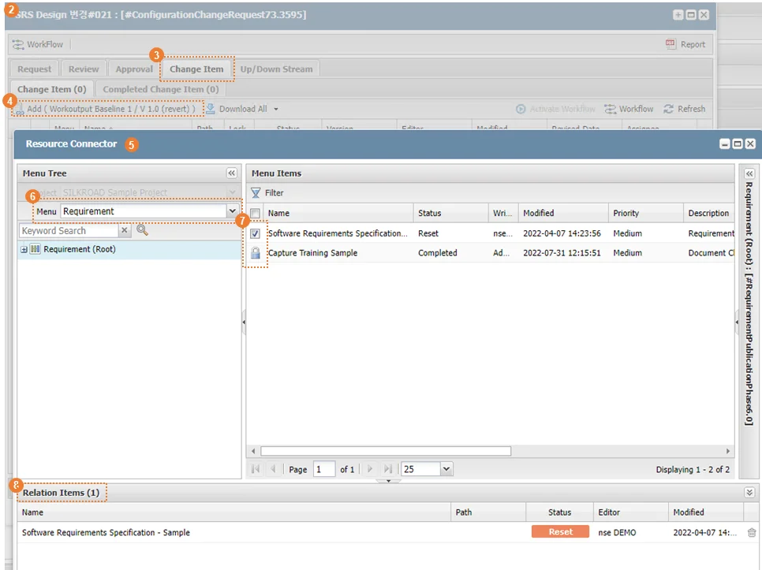 |
- 대상 아이템이 Lock, Check-Out 상태일 때 체크박스는 자물쇠 아이콘이 표시되고 체크할 수 없다.
- Workflow 가 진행 중인 경우 체크박스가 비활성화 된다.
|
⑧ ‘Relation Items’에서 클릭된 목록을 확인한다.
⑨ ‘OK’ 버튼을 클릭하여 저장한다.
① Change Request Change Request를 클릭하거나, 우 클릭해 Context 메뉴에서 Detail Info를 실행한다.
② Change Request 창이 생성된다.
③ Change Item 탭을 클릭한다.
④ Change Item 목록 우측의 삭제 아이콘을 클릭한다.
⑤ ‘OK’ 버튼을 클릭하여 저장한다.
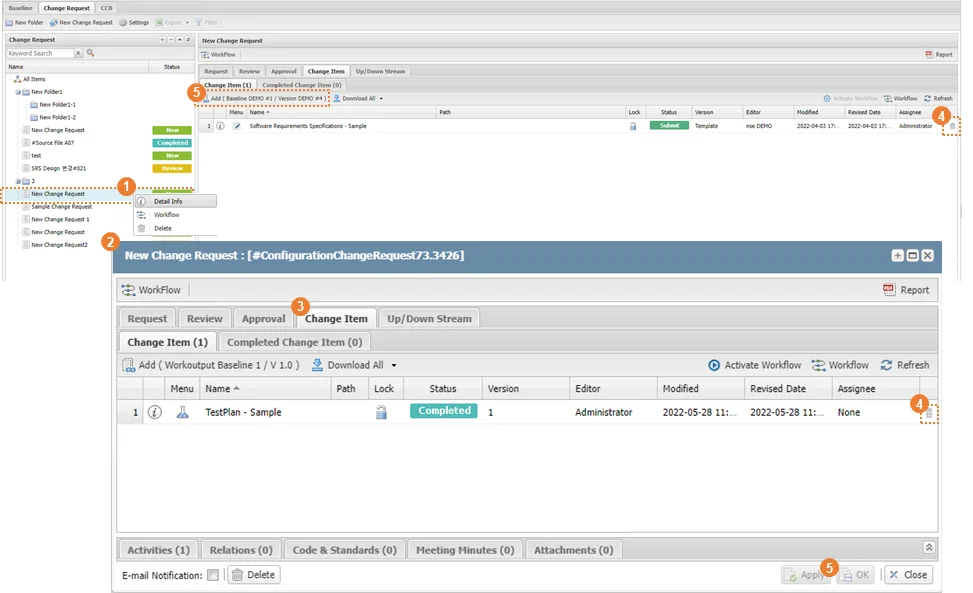 |
삭제 기능은 CR 생성자와 관리자(administrator, Project Manager, 메뉴 권한 Admin) 권한을 가진 사용자만 가능하다. 삭제한 Change Item의 Workflow는 Reset 된다. |
Change Item의 Change Request 등록 시점 버전(Registered Version)과 최신 버전(Current Version) 상태의 문서, 파일을 다운로드 받는다.
① 목록에서 대상 Change Request를 클릭한다. 또는 Change Request를 우 클릭 후 정보창(Detail info)을 실행한다.
② Change Item 탭을 선택한다.
③ ‘Download All’ 버튼을 눌러 Change Item 다운로드 버전을 선택한다.
- Current Version : Change Item의 최신 버전을 다운로드
- Registered Version : Change request 등록 시점의 버전을 다운로드
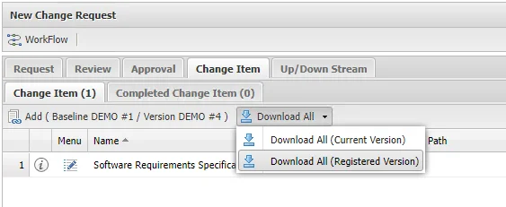
Change Item의 수정은 Change Item Workflow Status가 Configuration Status Setting에서 설정한 Status가 되었을 때 가능하다. Change Item Workflow는 Change Item 목록에서 진행 할 수 있다.
Change Item은 기본 Workflow 설정이 되어 있지 않아 설정이 필요하다. Workflow 설정은 관리자 권한을 가진 사용자가 ‘Workflow Setting’에서 진행한다.
① 관리자 권한 계정을 사용해 실크로드 ‘Workflow Setting’ 아이콘을 클릭한다.
② Workflow Add 아이콘을 클릭한다.
③ Add Workflow 창에서 내용을 입력한다.
- Name : Workflow 명
- Type : Workflow 타입 설정으로 Work Assignment 선택
- Tracker : Workflow 대상 설정으로 Change Item 선택
- Template : Change Item 템플릿 유무에 따라 선택(N/A 선택 시 기본 Workflow 템플릿 적용)
- Default : 해당 Workflow를 기본 Workflow로 설정하도록 체크 선택
④ OK 버튼을 클릭하여 저장한다.
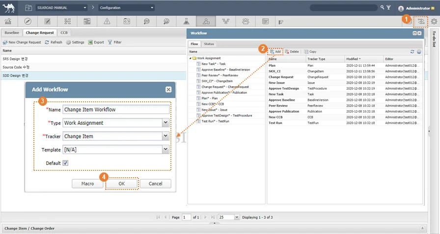 |
Change Item Workflow 진행은 Change Item 목록 상단의 Workflow 버튼으로 가능하다.
① Workflow 목록 상단 Activate Workflow 를 클릭한다.
② Progressing Status 창이 생성되며 Workflow 진행 상황을 표시한다.
③ Workflow Activate 완료 후 Change Item의 Workflow가 New에서 Submit으로 변경된다.
④ Change Item 목록 상단 Workflow 버튼을 클릭한다.
⑤ CI Workflow Multi Process 창이 활성화 된다.
⑥ change Item 목록에서 Workflow 진행 대상을 체크한다. 또는 체크 버튼 상단의 체크 박스를 클릭(Check All 버튼)을 클릭한다.
⑦ Next Flow를 클릭한다.
⑧ Assignee를 클릭한다.
⑨ Comment를 입력한다.
⑩ Assignment 버튼을 클릭한다.
|
Change Item Workflow가 설정되어 있지 않으면 Activate Workflow 버튼은 비활성화 된다. Change Item 의 Workflow가 모두 Activate 실행되어 있 경우 Activate Workflow 버튼이 비활성화 된다. Change Request Workflow가 먼저‘Activate Workflow’ 되어야만 Change Item의 ‘Activate Workflow’진행이 가능하다. Change Item 목록 중 Next Flow와 일치하는 조건을 가진 Change Item만 선택해 Workflow를 진행한다. Change Item이 lock/Check Out 상태인 경우 Workflow를 진행 할 수 없다. |
Change Request에 등록된 문서, 파일 등 Configuration Item은 Configuration Status Setting에서 설정한 Status가 되었을 때 수정이 가능하다.
① Change Item Workflow를 진행해 수정 가능하도록 설정한 Status가 되었는지 확인한다.
② Change Request가 생성되었고, Change Item Workflow 수정 가능하도록 설정한 Status가 아닌 상태에서 수정 시도하는 경우 제한 알림 팝업이 생성된다.
|
③ 설정한 수정 가능한 Status에 도달한 경우 DOCS를 이용한 문서 수정, Check In/Out을 통한 소스 파일 수정이 가능하다.
④ Change Request가 생성되지 않은 상태에서 수정 시도하는 경우 Change Request 생성을 위한 팝업이 생성된다. 새로운 Change Request(New Change Request) 생성, 기존 생성된 Change Request에 Change Item을 추가(Add to current Change Request) 할 수 있다.
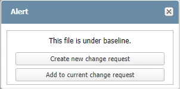 |
⑤ Change Item 정보창 하단 Change Request 탭에 Change Item 수정 버전에 대한 Change Request가 표시되는지 확인한다.
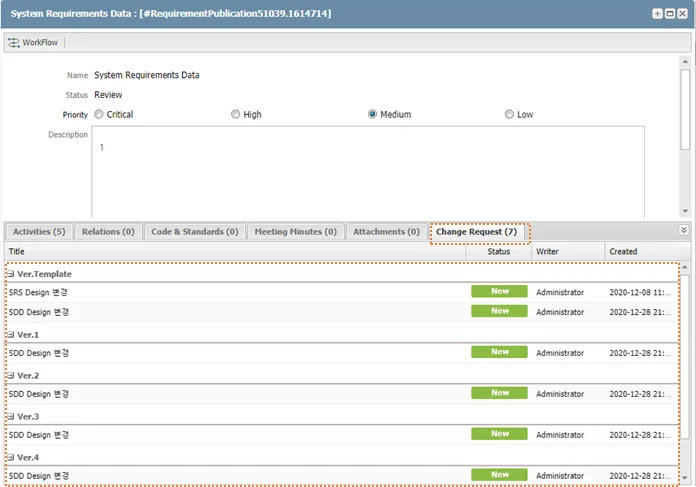 |
Change Item Workflow가 종료된 경우 change Item은 Completed change Item 목록으로 이동된다.
① Change Item Workflow Status를 Completed 까지 진행한다.
② Change Item 목록이 Change Item 탭에서 Completed Change Item 탭으로 변경된 것을 확인한다.
|
Workflow 진행이 종료된(Completed) Change Item은 삭제 할 수 없다. Workflow 진행이 종료된(Completed) Change Item은 현재 CR에서 다시 Change Item으로 추가 할 수 없다. Workflow 진행이 종료된(Completed) Change Item 수정을 위해서는 새로운 Change Request를 생성해서 Change Item Workflow를 진행해야 한다. |
Completed Change Item의 Change Request 등록 시점 버전(Registered Version)과 수정 완료 버전(Completed Version)에 해당하는 문서, 파일을 다운로드 받는다.
① 목록에서 대상 Change Request를 클릭한다. 또는 Change Request를 우 클릭 후 정보창(Detail info)을 실행한다.
② Completed Change Item 탭을 선택한다.
③ ‘Download All’ 버튼을 눌러 Change Item 다운로드 버전을 선택한다.
- Completed Version : Workflow Completed 시점의 버전을 다운로드
- Registered Version : Change request 등록 시점의 버전을 다운로드
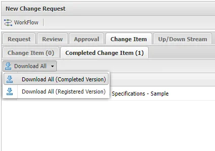
Change Request의 상/하위 추적성을 연결하고 관리한다. Change Request간 상·하위 추적성 정보는 ‘Show Change Request Relation’ 기능을 통해 확인할 수 있다.
추적성 연결 대상은 상위 Change Request이다. 상하위 Change Request는 Workflow 진행 시 종속 관계를 가진다. 하위 Change Request의 Workflow가 종료되지 않으면, 상위 Change Request는 종료할 수 없다.
① Change Request Change Request를 클릭하거나, 우 클릭해 Context 메뉴에서 Detail Info를 실행한다.
② Change Request 창이 생성된다.
③ Up/Down Stream 탭을 클릭한다.
④ ‘Edit’ 버튼을 클릭한다.
⑤ ‘Resource Connector’ 창이 생성된다.
⑥ Configuration Menu를 선택하고 Tree에서 대상 메뉴 또는 폴더를 클릭한다.
⑦ ‘Tracker Items’에서 Change Request를 클릭하여 상세 내용을 확인한다.
⑧ Change Request를 체크 표시하면 창 하단의 ‘Relation Items’ 목록에 해당 Change Request가 추가된다.
- Direction : Up 영역에 추가한 상위 Change Request가 표시된다.
⑨ ‘OK’ 버튼을 클릭하여 저장을 완료한다.
⑩ Change Request 창의 ‘OK’ 버튼을 클릭하여 저장을 완료한다.
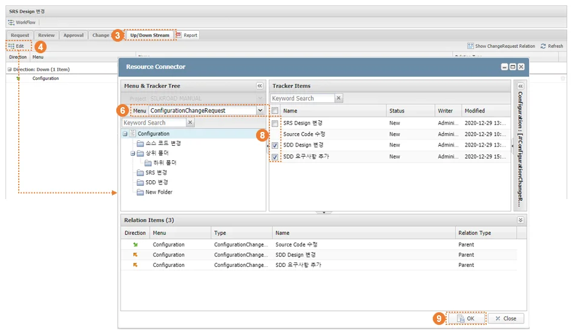 |
Change Request간 연결된 상·하위 추적관계를 확인할 수 있다.
① Change Request Change Request를 클릭하거나, 우 클릭해 Context 메뉴에서 Detail Info를 실행한다.
② Change Request 창이 생성된다.
③ Up/Down Stream 탭을 클릭한다.
④ 메뉴바 우측 상단 ‘Show Change Request Relation’ 버튼을 클릭한다.
⑤ ‘Change Request Relation’ 창이 생성된다.
⑥ Change Request 상하위 관계를 확인한다. Change Request 영역 더블 클릭 시 해당 Change Request 정보창이 생성된다.
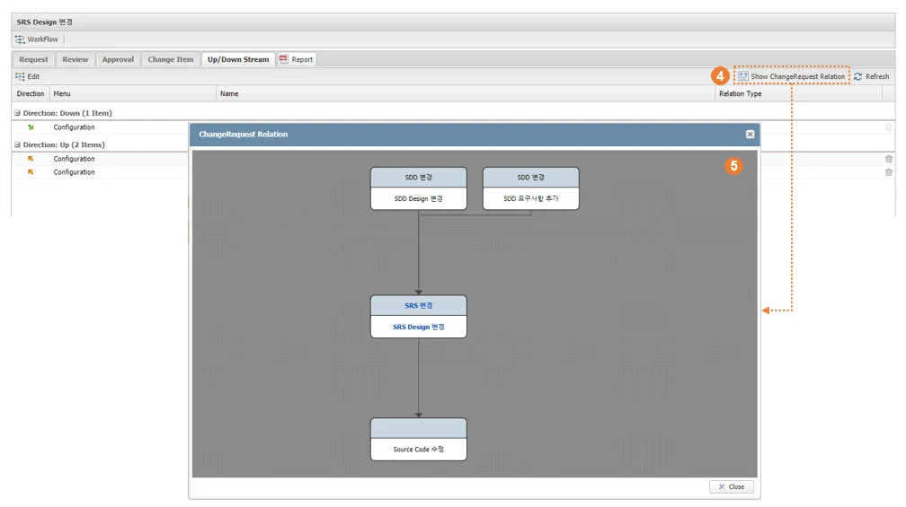 |
Change Request의 검토/승인을 위하여 프로세스를 활성화하고 업무를 할당하는 기능이다.
① 승인 프로세스를 진행할 Change Request 창의 ‘Workflow’ 버튼을 클릭한다.
② ‘Workflow’ 창이 생성된다.
③ Next: 다음 Activity, Assignee: 업무 담당자, Comment: Workflow에 대한 내용을 클릭/입력한다.
④ ‘Assignment’ 버튼을 클릭하여 Workflow의 다음 단계로 진행한다.
⑤ Change Request의 Status 및 담당자가 변경된다.
⑥ Change Request 검토/승인 업무가 업무 담당자의 To-do List에 추가된다.
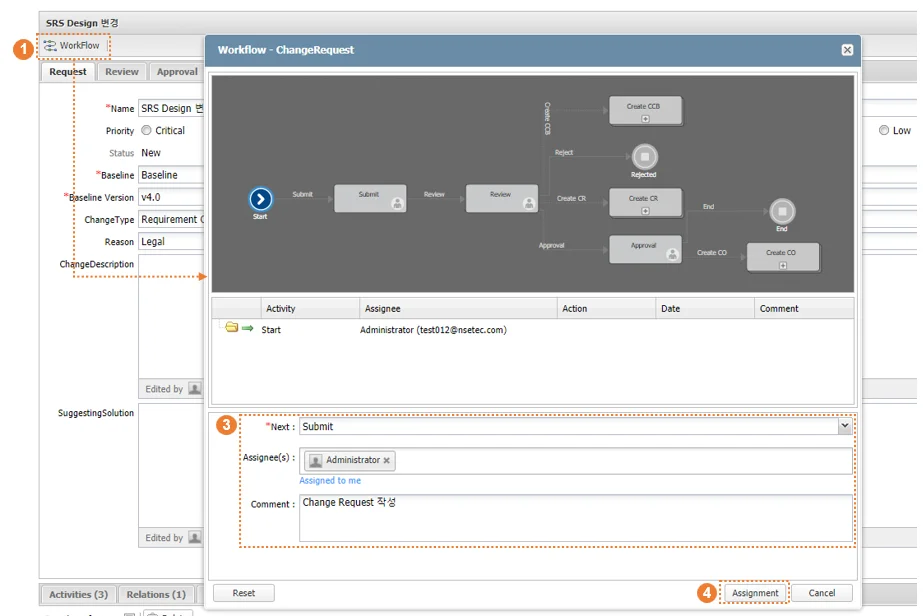 |
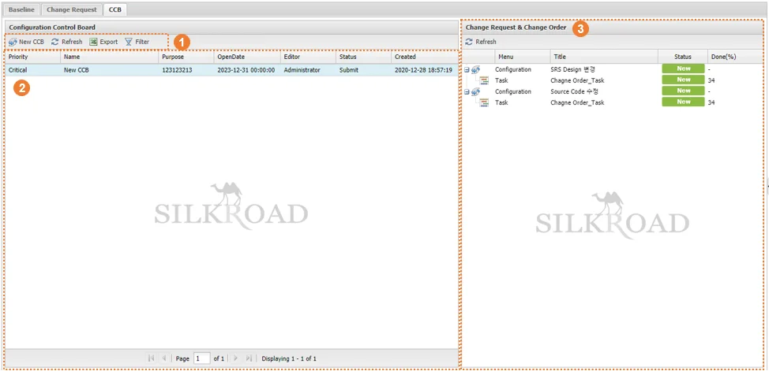 |
구분 | 명칭 | 설명 |
| 메뉴 바 | CCB 도구 모음 |
| CCB 목록 | CCB 목록 |
| CR 및 CO 목록 | 클릭된 CCB와 연계된 Change Request 및 Change Order 목록 (Change Order의 Progress Rate 정보는 SILKROAD Task Management 시스템과 연계되어 표시됨.) |
CCB를 생성하고 Change Request를 연계할 수 있다.
① ‘New CCB’ 버튼을 클릭하거나 목록에서 우 클릭하여 생성된 Context 메뉴에서 New CCB를 클릭한다.
② ‘New CCB’ 창이 생성된다.
③ CCB 상세 정보를 클릭/입력한다.
④ CCB에서 검토할 CR을 클릭하기 위하여 ‘Reviewed Change Request’의 ‘Add’ 버튼을 클릭한다.
⑤ ‘Change Request to Review’ 창이 생성된다.
⑥ 검토하고자 하는 Change Request을 체크한다.
⑦ ‘Add’ 버튼을 클릭한다.
⑧ CCB 참석자를 클릭하기 위하여 ‘Attendance’의 ‘Add’ 버튼을 클릭한다.
⑨ 참석 대상자를 체크한다.
⑩ ‘Add’ 버튼을 클릭한다.
⑪ ‘OK’ 버튼을 클릭하여 CCB 생성을 완료한다.
|
① CCB를 더블클릭하거나 우 클릭하여 생성된 Context 메뉴에서 Detail Info를 클릭한다.
② CCB 정보창에서 내용을 확인하거나 수정 후 OK 버튼을 클릭한다.
|
① CCB를 클릭한다.
② 우측 Change Request & Change Order에 해당 CCB에 등록된 Change Request와 Change Order가 목록에 표시된다.
③ CO의 Done(진행률)(%)은 SILKROAD Task Management 모듈에서 관리되는 해당 CO(Task)의 진행률 정보를 표시한다. Change Request의 Done(%)은 CO의 평균 Done(%)값이 표시된다.
④ Reviewed Change Request와 각 Change Request의 CO를 더블클릭하면 해당 아이템의 정보창이 생성된다.
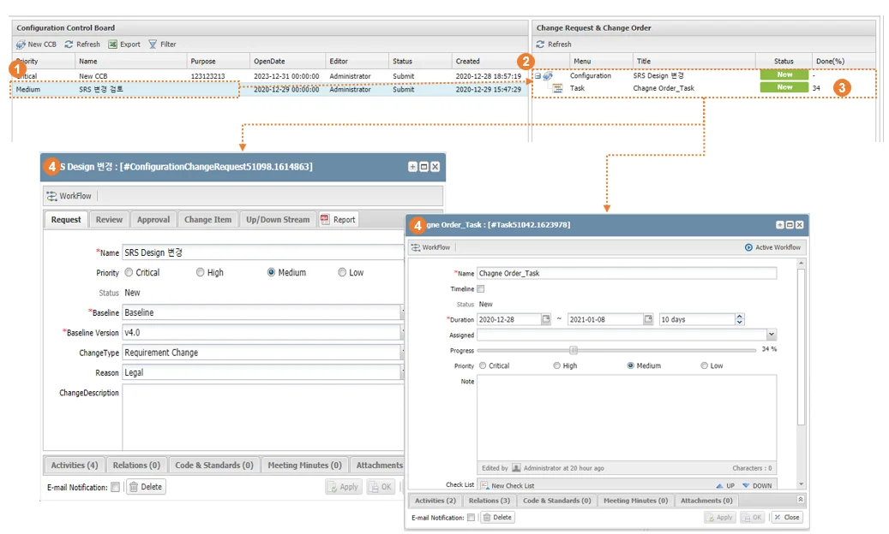 |
CCB Context 메뉴와 정보창의 Delete 버튼으로 베이스라인을 삭제할 수 있다.
① CCB 목록에서 ‘CCB’를 우 클릭해 생성된 Context 메뉴에서 Delete를 클릭한다.
② 또는 CCB 목록에서 CCB를 더블클릭 해 정보창을 열어 하단의 Delete를 클릭한다.
③ Delete 알림 팝업이 생성된다.
④ ‘Yes’ 버튼을 클릭한다.
|
삭제 기능은 관리자(administrator, Project Manager, 메뉴 권한 Admin) 권한을 가진 사용자만 가능하다. |
CCB 목록을 MS-Excel 파일로 내보내는 기능이다.
① 메뉴바에서 ‘Export’ 버튼을 클릭한다.
② ‘ControlBoardt.xlsx’ 파일이 사용자 로컬 PC로 다운로드 된다.
- 다운로드 위치는 인터넷 브라우저(Chrome) 설정에 따르며 일반적으로 ‘C:\Users\윈도우 계정\Downloads’ 이다.
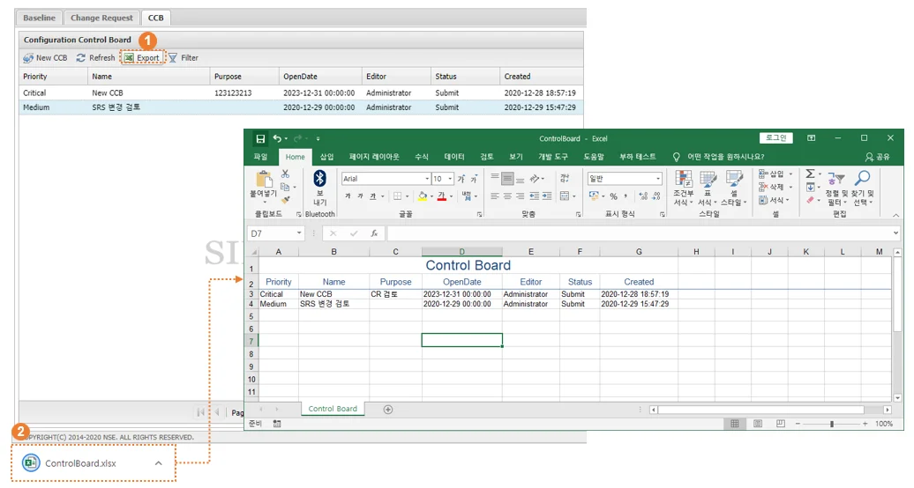 |
CCB의 Name, Priority, Purpose, Organizer, OpenDate, Description, Status, Created 등의 정보를 통해 검색할 수 있는 기능이다.
① 메뉴바에서 ‘Filter’ 버튼을 클릭한다.
② 하단 Filter 영역에서 검색 대상 Filer 값을 클릭/입력한다.
③ ‘Search’ 버튼을 클릭하여 검색한다.
④ 필터 초기화는 Reset Filter 버튼 클릭 후 ‘Search’ 버튼을 클릭하거나, Reset Filter 확장 버튼을 클릭하여 Reset Filter & Search를 클릭한다.
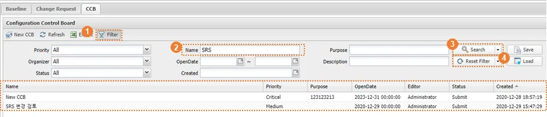 |
CCB의 검토/승인을 위하여 프로세스를 활성화하고 업무를 할당하는 기능이다.
① CCB 창의 ‘Workflow’ 버튼을 클릭한다.
② ‘Workflow’ 창이 생성된다.
③ Next: 다음 Activity, Assignee: 업무 담당자, Comment: Workflow에 대한 내용을 클릭/입력한다.
④ ‘Assignment’ 버튼을 클릭하여 Workflow의 다음 단계로 진행한다.
⑤ CCB Status 및 담당자가 변경된다.
⑥ CCB 검토/승인 업무가 업무 담당자의 To-do List에 추가된다.
|
번호 | 메시지 | 설명 | 해결방안 |
|---|---|---|---|
1 | |||
2 | |||
3 | |||
4 | |||
5 | |||
6 | |||
7 | |||
8 | |||
9 |